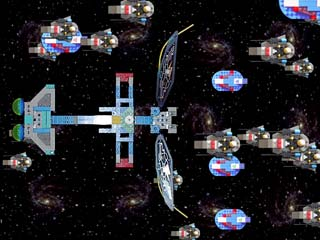

|
|
FAQ
General FAQ | Isometric FAQ
Send questions! I'll try to think up answers and add them in. Also, be sure to check the changes between versions, and the release notes.
General
Troubleshooting
- When I start the demo, the screen flashes but nothing happens.
- In Windows, I get a "Can't find MSVCxxx.dll" error message.
- It's not fast enough.
Using Kyra: The Sprite Engine
- How can a Sprite be drawn to a Canvas?
- How can I reduce .dat file size, OR, how can I use multiple Vaults?
- How do I get the size (or bounds) of a Sprite (or Action)?
- Is there a Widget set / GUI for Kyra?
- Can Kyra work with other drawing packages? Is it possible to use an existent GUI lib for SDL?
Using Kyra: Graphics and Games
A Sprite Engine is
the drawing and rendering component of 2D and quasi-3D games. Examples
of this kind of game are Civilization, Donkey Kong (classic arcade), Pharaoh,
Zeus, Warcraft, Diablo, Frogger, and Pirates!, among many others. It is
so called because the "characters" or "little men"
are referred to as "sprites".
What do I need to know to use Kyra?
The computer language C++, primarily. Some experience with graphics and SDL will help greatly. It's meant to be as easy as possible, so given that you understand basic C++ you should be able to use the engine.
When I start the demo, the screen flashes but nothing happens.
The demo -- a somewhat intolerant test app -- is very sensitve to directory paths. This is almost always caused by not running the demo in the correct working directory. Switch to the command line, go to where the demo is installed, and run "krdemos" or "./krdemo" from that directory.
In Windows, I get a "Can't find MSVCxxx.dll" error message.
Kyra does not include the MSVC dll file that it hopes are in your Windows/System directory. If it isn't there...error message. I'm still working on what systems are problematic, so I'd appreciate feedback on this one. Generally speaking, newer systems (Win 98 and later) should have the files.
A better solution is to just ship the required DLL with the binary. A fix for the next version.
This is a distribution problem; the source build will work fine. Or the dll could be bundled with the windows binary.
How can a Sprite be drawn to a Canvas
It is sometimes useful to be able to take a Sprite Resource, transfer it to a Canvas, and manipulate it. The SpriteResource::CreateCanvasResource() will create and return a CanvasResource() version of the Sprite.
How can I reduce .dat file size, OR, how can I use multiple Vaults?
It is often useful to break down .dat files for size and management. A .dat file for the current background, with a .dat for generic spaceships, and a .dat file for the current font may work much better than one big huge .dat for everything.
There can only be one .dat file per ResourceVault. But, an Engine can use any number of ResourceVaults. Every Engine has one default vault -- but you can add more. Just be sure to delete the engine before any vaults it uses. It also introduces some management overhead: when you get a resource from a vault, you need to be sure to use the correct one.
How do I get the size (or bounds) of a Sprite? (or Action, or Frame?)
It is an important point that Sprites are containers for Actions, and Actions are nothing but containers for Frames. It is not terribly meaningful to ask what is the bounds of a Sprite or Action: you could define it as the union of all the contained Frames...but that's not usually helpful.
Generally it is more useful to know the bounds of a Frame. Assuming you have a Sprite*, it can be done as follows:
KrRect bounds; KrMatrix2 xForm; xForm.Set(); // create an identity transform. KrSpriteResource* spriteResource = sprite->SpriteResource(); KrAction* action = spriteResource->GetAction( "SOMETHING" ); // the action of interest action->Frame( 0 ).CalculateBounds( xForm, &bounds ); // the frame of interes
The bounds returned are relative to the hot spot, meaning that negative values for x and y are not uncommon. The size can be queried from the KrRect.
In version 1.5.0, the fuction GetBoundingBox() was added to query the current bounds of the object in it's current state. (Automating the above code.)
Is there a Widget set / GUI for Kyra?
In version 2 a simple widget set is provided. See Widgets for more info.
Can Kyra work with other drawing packages? Is it possible to use an existent GUI lib for SDL?
This is the "does Kyra play well with others?" question. Yes and no. And depends on whether the Kyra and GUI ouputs overlap.
It's can be an advanced use of Kyra. The easiest solution (although perhas not what you want) is to put Kyra and the GUI on seperate parts of the screen. The engine constructor allows Kyra to not use the full screen. To use Kyra and another GUI on the same screen space is trickier.
Kyra and the GUI don't overlap
The easier case. In this case, Kyra should be set up to run in a view window. If the GUI library doesn't draw "out of bounds" they may be able to exists completely independently, and all is well.
If you need to coordinate their painting cycles, you'll need to use the extra parameters on the KrEngine::Draw() method. Calling this with 'updateRect' false will update the back buffer without calling SDL_UpdateRects(). It will pass back the rects that need to be updated. Assuming you can get this information from the GUI library, you can use it to coordinate the screen updates.
Kyra and the GUI on the same screen space
To get this to work, you really need to be somewhat savvy with how Kyra and the other package repaint. Outlining the Kyra issues:
Kyra is a dirtly rectangle renderer. It keeps track of a framebuffer (the one past in on the construction of the KrEngine) and only updates the minimal area of the screen required. If another package paints to the frame buffer -- before or after Kyra -- Kyra has no way to know that and will not update the correct areas of the screen. You can manage this with KrEngine::InvalidateRectangle(). This adds a request to Kyra to update a region.
This is the crux if the biscuit. The 2 packages need to have there invalidation areas coordinated in order to work correctly.
You also may not want Kyra to transfer the backbuffer to physical video, which is normally done in the Draw() method. You can pass 'false' to the updateRect parameter in the draw method to surpress the call to SDL_UpdateRects(). It can also return to you the rectangles that need to be updated.
What source graphics files and editors work well with Kyra?
I'm not about to take a stand here: there are many good graphics editors out there. If you want to work with an alpha channel, including partial transparency, you'll need something that supports editing semitransparent images. The Gimp is free and handles the alpha channel well.
Kyra still supports transparency without an alpha channel in the source bitmap by using a color key. With a color key, it's an all or nothing deal: opaque or transparent, nothing in between.
Kyra supports all the image file formats supported by SDL Image.
Take a look at some of the images on the Tools page. It's easiest to have a bunch of related images (all the frames for a give Sprite animation, for instance) grouped on one page. Then use the sprite editor to mark Sprites, Actions, and Frames for export to the engine.
If you are using a color key (no alpha channel) then certain specific RGB values (specified when you import the image) will become transparent. If you use images with an alpha channel, the alpha channel directly specifies the transparency.
How do I use Kyra with a top-down or side view?
The space demo:

is an example of a top down view, which has the same benefits and limitations of a side view. (Not used in the demo, but Donkey Kong is the canonical example.) This is an easy view to work with.
The background or floor tiles are square, and can be tiled. The "space scene" in the background is one relatively small tiled rotated and flipped in 8 combinations.
The space ships were made with plastic building blocks and photographed top-down with a digital camera. The image was brought into Photoshop, where background noise was removed with the Photoshop tools. Everything not a spaceship (all the negative space) is made into a single flat color, that is interpreted as transparent when the image is loaded into the sprite editor.
If the spaceships had been rendered, then you would normally try to approximate the same geometry by setting up a virtual camera with a high zoom, located reasonably far from the model.
Depth sorting is usually very easy in a top-down or side view. The programmer generally knows the relative depths of all the objects, and sets the ZDepth method accordingly.